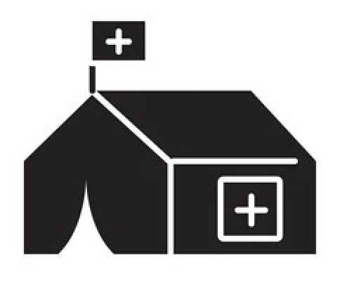

Health Camp Management System (HCMS)
Project - Oracle, November 2022 - December 2023
The health condition of people living in urban and rural slums is dire due to the absence of nearby hospitals,
forcing them to rely solely on health camps. Patient data collected at these camps is currently paper-based and
consolidated manually in Excel sheets, hindering the extraction of insights such as disease outbreaks or resource
requirements for future camps. Despite support from NGOs, volunteers struggle with data consolidation and tracking
of medical equipment, severely impacting their ability to effectively serve the population. The lack of rural
statistics exacerbates the gap between the country's health infrastructure and the needs of rural communities.
To address these challenges, a simplified application will be developed for efficient collection and management of
patient data. This will enable doctors to treat individuals based on their comprehensive health history gathered during
health camps. Utilizing data insights and predictive analytics, the application aims to optimize the scheduling and
execution of health camps, as well as streamline the delivery and monitoring of medical supplies to targeted regions.
Key features of the application will include user-friendly interfaces tailored for easy adoption by field volunteers,
ensuring daily operational usability. Data security will be paramount, achieved by eliminating intermediaries from
transaction processes.
Multi Agent System & IoT based Plug and Play implementation in Smart grid
Project - Sri Sivasubramaniya Nadar College of Engineering, 2019 - 2023

Dynamic energy management using smart grid, implementing plug and play feature with Multi Agent System(MAS) and Internet of Things(IOT).
View ProjectEnergy Management System Using Multi Agent Systems with IoT and Machine Learning
IEEE Publication - 2023 International Conference on Circuit Power and Computing Technologies (ICCPCT), September 2023
Combining the implementation of smart grid using multi agent system and machine learning algorithms for short term load prediction together for providing an efficient energy management system to sustain high energy demands in industries and households.
View ProjectBlockchain based energy transaction in microgrid
IEEE Publication - 2022 IEEE 19th India Council International Conference (INDICON), November 2022
This project aims to provide a potential solution of how blockchain facilitates cost reduction when used in micro grids. The energy is transferred from producer to consumer and the additional service charges are eliminated when using the blockchain method. This idea uses a bidding mechanism in the grid so that the producer who gives energy at a minimum cost is automatically mapped to the consumer. The smart contract is included in blockchain shared by the participants and keeps immutable transaction records.
View ProjectApplication of Machine Learning Algorithms for Short term Load Prediction of Smart grid
IEEE Publication - 2020 International Conference on Smart Electronics and Communication (ICOSEC), October 2020
Short term load prediction in power grid using machine learning algorithms like Decision Tree Regression, Random Forest, Neural Networks and Radial Basis Function.
View Project